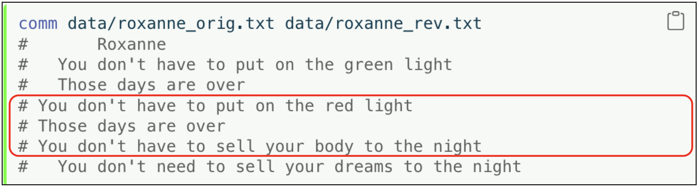
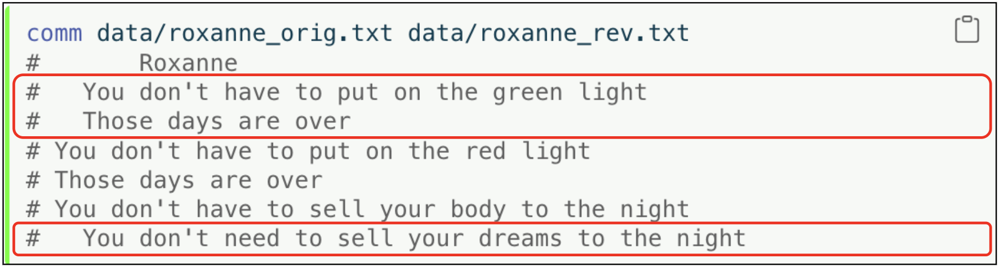

tree -P 'wu*' dataManipulating Text
The Unix and Linux operating systems thrive on simplicity and efficiency, principles elegantly manifested in text handling. Central to this ecosystem are the commands explicitly designed for text manipulation.
The Text Stream
Unix/Linux conceptualizes text as a stream, a continuous sequence of characters that can be manipulated in real-time. Streams are crucial for understanding how Unix/Linux commands process text. A text stream can originate from files, input devices, or even the output of other commands. Treating text as a steady stream of inputs offers a versatile and powerful method for text manipulation.
Text Manipulation
Text manipulation commands embody the Unix philosophy of ‘do one thing and do it well’ and demonstrate the system’s power in processing text streams. This section will explore these fundamental commands, illustrating how they easily interact with text streams, standard input (stdin), and standard output (stdout) to perform complex text manipulations.
Wu-Tang
The data/ folder contains three different file formats of the members of the Wu-Tang American hip hop collective. We’ll use the tree command to view the contents of the data/ directory:1
The -P 'wu*' option tells tree to include only files and directories that match the pattern 'wu*'. The pattern here uses a wildcard (*), meaning it will match any file or directory name that starts with "wu". The pattern is case-sensitive by default.
# data
# ├── wu_tang.csv
# ├── wu_tang.dat
# ├── wu_tang.tsv
# └── wu_tang.txt
#
# 1 directory, 4 filesWe can add the -f option to instruct tree to display the full path for each file and directory relative to the root of the tree, instead of just showing the names.
tree -Pf 'wu*' dataThe command summarizes the content by showing “1 directory, 4 files”.2
# data
# ├── data/wu_tang.csv
# ├── data/wu_tang.dat
# ├── data/wu_tang.tsv
# └── data/wu_tang.txt
#
# 1 directory, 4 filesThe wu_tang.dat file contains the members in pipe-delimited format:
cat data/wu_tang.dat
# |Member |Name |
# |RZA |Robert Diggs |
# |GZA |Gary Grice |
# |Method Man |Clifford Smith |
# |Raekwon the Chef |Corey Woods |
# |Ghostface Killah |Dennis Coles |
# |Inspectah Deck |Jason Hunter |
# |U-God |Lamont Hawkins |
# |Masta Killa |Jamel Irief |
# |Cappadonna |Darryl Hill |
# |Ol Dirty Bastard |Russell Tyrone Jones |We can use head and tail to view specific ‘rows’ of the data:
head -n8 data/wu_tang.dat | tail -n4
# |Raekwon the Chef |Corey Woods |
# |Ghostface Killah |Dennis Coles |
# |Inspectah Deck |Jason Hunter |
# |U-God |Lamont Hawkins |Epigrams
echo prints its arguments to the standard output (stdout). It can be used in scripts and on the command line to display messages or variables.
echo "Beware of the Turing tar-pit in which everything is possible but nothing of interest is easy."
# Beware of the Turing tar-pit in which everything is possible but nothing of interest is easy.echo can also be used to write text to a file created with touch. The quote below comes from Alan Perlis’s 1982 article, “Epigrams on Programming.”3
touch data/turing_tarpit.txt
echo "Beware of the Turing tar-pit in which everything is possible but nothing of interest is easy." > data/turing_tarpit.txtcat displays the content of files straight to the screen, useful for checking what’s in a file quickly.
cat data/turing_tarpit.txt
# Beware of the Turing tar-pit in which everything is possible but nothing of interest is easy.All 130 epigrams are stored and numbered in the data/perlis_epigrams.txt file.
head and tail allow us to view the top and bottom of any text file:
head data/ajperlis_epigrams.txt
# One man’s constant is another man’s variable.
# Functions delay binding; data structures induce binding. Moral: Structure data late in the programming process.
# Syntactic sugar causes cancer of the semicolon.
# Every program is a part of some other program and rarely fits.
# If a program manipulates a large amount of data, it does so in a small number of ways.
# Symmetry is a complexity-reducing concept (co-routines include subroutines); seek it everywhere.
# It is easier to write an incorrect program than understand a correct one.
# A programming language is low level when its programs require attention to the irrelevant.
# It is better to have 100 functions operate on one data structure than 10 functions on 10 data structures.
# Get into a rut early: Do the same process the same way. Accumulate idioms. Standardize. The only difference(!) between Shakespeare and you was the size of his idiom list - not the size of his vocabulary.tail data/ajperlis_epigrams.txt
# In seeking the unattainable, simplicity only gets in the way. If there are epigrams, there must be meta-epigrams.
# Epigrams are interfaces across which appreciation and insight flow.
# Epigrams parametrize auras.
# Epigrams are macros, since they are executed at read time.
# Epigrams crystallize incongruities.
# Epigrams retrieve deep semantics from a data base that is all procedure.
# Epigrams scorn detail and make a point: They are a superb high-level documentation.
# Epigrams are more like vitamins than protein.
# Epigrams have extremely low entropy.
# The last epigram? Neither eat nor drink them, snuff epigrams.Applying a ‘trust, but verify’ to the previous claim about the Turing tar-pit quote involves using grep (“global regular expression print”) to confirm the text in turing_tarpit.txt is also in dataperlis_epigrams.txt.
grep reads from stdin (or a list of files) and outputs the lines that match a specified pattern. Lets see how many epigrams in data/perlis_epigrams.txt include the word “Turing”:
grep Turing data/ajperlis_epigrams.txt
# Beware of the Turing tar-pit in which everything is possible but nothing of interest is easy.
# What is the difference between a Turing machine and the modern computer? It’s the same as that between Hillary’s ascent of Everest and the establishment of a Hilton hotel on its peak.Number sequences
We’ll add numbers to each of the 130 epigrams in data/ajperlis_epigrams.txt to make them easier to reference. We can use the seq command piped into a formatting command like awk:
seq 130 | awk '{print $1"."}' | head
# 1.
# 2.
# 3.
# 4.
# 5.
# 6.
# 7.
# 8.
# 9.
# 10.seq 130 generates the sequence of numbers from 1 to 130, then awk '{print $1") "}' takes uses the numbers from seq as the input to awk ($1) and appends a period . to each number. We can add the > operator redirects the output to data/numbered_lines.txt.
seq 130 | awk '{print $1"."}' > data/numbered_lines.txtWe can now use paste to combine data/numbered_lines.txt and data/ajperlis_epigrams.txt. The -d option stands is the delimiter to be placed between the pasted lines (which we’ll use to specify a space " ").
We’ll preview the head and tail of our paste before writing to a file:
paste -d " " data/numbered_lines.txt data/ajperlis_epigrams.txt | head -n5
# 1. One man’s constant is another man’s variable.
# 2. Functions delay binding; data structures induce binding. Moral: Structure data late in the programming process.
# 3. Syntactic sugar causes cancer of the semicolon.
# 4. Every program is a part of some other program and rarely fits.
# 5. If a program manipulates a large amount of data, it does so in a small number of ways.paste -d " " data/numbered_lines.txt data/ajperlis_epigrams.txt | tail -n5
# 126. Epigrams retrieve deep semantics from a data base that is all procedure.
# 127. Epigrams scorn detail and make a point: They are a superb high-level documentation.
# 128. Epigrams are more like vitamins than protein.
# 129. Epigrams have extremely low entropy.
# 130. The last epigram? Neither eat nor drink them, snuff epigrams.All 130 epigrams line up, so we’ll assign the output to the data/numbered_epigrams.txt file.
paste -d " " data/numbered_lines.txt data/ajperlis_epigrams.txt > \
data/numbered_epigrams.txtNow we can re-check our Turing pattern in data/numbered_epigrams.txt:
grep Turing data/numbered_epigrams.txt
# 54. Beware of the Turing tar-pit in which everything is possible but nothing of interest is easy.
# 83. What is the difference between a Turing machine and the modern computer? It’s the same as that between Hillary’s ascent of Everest and the establishment of a Hilton hotel on its peak.Roxanne
The data/roxanne.txt file contains the lyrics to the 1979 song Roxanne by The Police. We’ll use this file to explore several powerful Unix/Linux command-line utilities that are invaluable for searching, editing, and manipulating text data in files.
Global substitutions
awk is a powerful text processing tool. Here’s an example where awk uses gsub (global substitution) to replace the phrase “red light” with “green light” in the lyrics:
awk '{gsub(/red light/, "green light"); print}' \
data/roxanne.txt | head -4
# Roxanne
# You don't have to put on the green light
# Those days are over
# You don't have to sell your body to the nightgsub(/red light/, "green light") tells awk to substitute "red light" with "green light" globally within each line. print outputs the modified line. Without this, awk would not display anything. The entire command is enclosed in single quotes to prevent the shell from interpreting any special characters.
If we wanted to replace "Roxanne" with "Dianne" throughout the song, we’d use:
sed 's/Roxanne/Dianne/g' data/roxanne.txtshow/hide output
# Dianne
# You don't have to put on the red light
# Those days are over
# You don't have to sell your body to the night
# Dianne
# You don't have to wear that dress tonight
# Walk the streets for money
# You don't care if it's wrong or if it's right
# Dianne
# You don't have to put on the red light
# Dianne
# You don't have to put on the red light
# Dianne (Put on the red light)
# Dianne (Put on the red light)
# Dianne (Put on the red light)
# Dianne (Put on the red light)
# Dianne (Put on the red light)
# Ro...
# I loved you since I knew you
# I wouldn't talk down to you
# I have to tell you just how I feel
# I won't share you with another boy
# I know my mind is made up
# So put away your make up
# Told you once I won't tell you again
# It's a bad way
# Dianne
# You don't have to put on the red light
# Dianne
# You don't have to put on the red light
# Dianne (You don't have to put on the red light)
# Dianne (Put on the red light)
# Dianne (Put on the red light)
# Dianne (Put on the red light)
# Dianne (Put on the red light)
# Dianne (Put on the red light)
# Dianne (Put on the red light)
# Dianne (Put on the red light)
# Dianne (Put on the red light)
# Dianne (Put on the red light)
# Dianne (You don't have to put on the red light)
# Dianne (Put on the red light)
# Dianne (Put on the red light)
# Dianne (Put on the red light)
# Dianne (Put on the red light)The s stands for substitute, the pattern to be replaced ("Roxanne") is followed by the new text ("Dianne"), and the g at the end of the command tells sed to perform the substitution globally on each line, rather than stopping after the first occurrence.
sort arranges lines of text alphabetically or numerically and uniq filters out adjacent repeated lines in a file (often used in conjunction with sort).
sort data/roxanne.txt | uniqshow/hide output
# I have to tell you just how I feel
# I know my mind is made up
# I loved you since I knew you
# I won't share you with another boy
# I wouldn't talk down to you
# It's a bad way
# Ro...
# Roxanne
# Roxanne (Put on the red light)
# Roxanne (You don't have to put on the red light)
# So put away your make up
# Those days are over
# Told you once I won't tell you again
# Walk the streets for money
# You don't care if it's wrong or if it's right
# You don't have to put on the red light
# You don't have to sell your body to the night
# You don't have to wear that dress tonightThe commands above sort the lines in the file first, then filter repeated lines.
We’ll use awk to add line numbers to data/roxanne.txt. NR is the record number variable in awk, which counts the lines. $0 represents the entire current line, and combining them with print will print the line number followed by the original line.
awk '{print NR, $0}' data/roxanne.txt > data/roxanne_lined.txt
head -n5 data/roxanne_lined.txt
# 1 Roxanne
# 2 You don't have to put on the red light
# 3 Those days are over
# 4 You don't have to sell your body to the night
# 5 RoxanneTwo-file commands
We’ll create a ‘metadata’ file for Roxanne in data/roxanne_meta.txt and add some content:
touch data/roxanne_meta.txt
echo "1 <Song Title>
2 <Chorus>
3 <Verse 1>
4 <Verse 2>
5 <Song Title>" > data/roxanne_meta.txt
cat data/roxanne_meta.txt
# 1 <Song Title>
# 2 <Chorus>
# 3 <Verse 1>
# 4 <Verse 2>
# 5 <Song Title>join is used to combine two files based on a common field. Assuming there’s another file with additional details for some lines, you would use:
join -1 1 -2 1 data/roxanne_lined.txt data/roxanne_meta.txt
# 1 Roxanne <Song Title>
# 2 You don't have to put on the red light <Chorus>
# 3 Those days are over <Verse 1>
# 4 You don't have to sell your body to the night <Verse 2>
# 5 Roxanne <Song Title>-1 1 specifies that the join field for the first file (data/roxanne_lined.txt) is the first column, and -2 1 means that the join field for the second file (data/roxanne_meta.txt) is also the first column.
comm is used to compare two sorted files line by line and outputs three columns by default:
1. Lines unique to the first file. 2. Lines unique to the second file. 3. Lines common to both files.
Let’s assume we have two versions of the song “Roxanne”. The original version is stored in roxanne_orig.txt, and a revised version with some lines changed, added, or removed is stored in roxanne_rev.txt.
roxanne_orig.txt
touch data/roxanne_orig.txt
echo "Roxanne
You don't have to put on the red light
Those days are over
You don't have to sell your body to the night" > data/roxanne_orig.txtroxanne_rev.txt
touch data/roxanne_rev.txt
echo "Roxanne
You don't have to put on the green light
Those days are over
You don't need to sell your dreams to the night" > data/roxanne_rev.txtThese files are structured to have similar content with minor differences.
# Roxanne
# You don't have to put on the red light
# Those days are over
# You don't have to sell your body to the night# Roxanne
# You don't have to put on the green light
# Those days are over
# You don't need to sell your dreams to the nightFirst, ensure both files are sorted (if not already). For simplicity, let’s assume these are sorted or have matching line orders. Then, use comm:
comm data/roxanne_orig.txt data/roxanne_rev.txt
# Roxanne
# You don't have to put on the green light
# Those days are over
# You don't have to put on the red light
# Those days are over
# You don't have to sell your body to the night
# You don't need to sell your dreams to the nightOutput:
- The first column shows lines that are only in the original file (
roxanne_orig.txt).

- The second column shows lines that are only in the revised file (
roxanne_rev.txt).

- The third column shows lines that are common in both files.

We can suppress any of these columns using the -1, -2, or -3 options. For example, comm -12 data/roxanne_orig.txt data/roxanne_rev.txt will show only the lines that are common in both files:
comm -12 data/roxanne_orig.txt data/roxanne_rev.txt
# RoxanneOr
comm -1 -2 data/roxanne_orig.txt data/roxanne_rev.txt
# RoxanneNOTE: ensure the files are sorted on the lines you are comparing; otherwise, comm will not function correctly.
To see the line by line differences between data/roxanne_orig.txt and data/roxanne_rev.txt, pass both files to diff:
diff data/roxanne_orig.txt data/roxanne_rev.txt
# 2c2
# < You don't have to put on the red light
# ---
# > You don't have to put on the green light
# 4c4
# < You don't have to sell your body to the night
# ---
# > You don't need to sell your dreams to the nightThe output of differences from diff can be interpreted as follow:
2c2indicates that a change has been made at line2of both files. Thecstands for “change”.< You don't have to put on the red lightshows what line 2 looked like in the original file (roxanne_orig.txt)---is a separator used bydiffto distinguish between the old version and the new version of the line> You don't have to put on the green light: shows what line 2 now looks like in the revised file (roxanne_rev.txt)
4c4indicates a change at line4in both documents.< You don't have to sell your body to the nightshows the original text at line 4 inroxanne_orig.txt---: Again, a separator> You don't need to sell your dreams to the nightshows the revised text at line 4 inroxanne_rev.txt
The -y option will display the changes side-by-side
diff -y data/roxanne_orig.txt data/roxanne_rev.txt
# Roxanne Roxanne
# You don't have to put on the red light | You don't have to put on the green light
# Those days are over Those days are over
# You don't have to sell your body to the night | You don't need to sell your dreams to the nightOr, if all we care about is if the files differ, we can use the -q option:
diff -q data/roxanne_orig.txt data/roxanne_rev.txt
# Files data/roxanne_orig.txt and data/roxanne_rev.txt differRecap
Using these commands can dramatically enhance productivity and efficiency when working with text files in Unix/Linux environments.
The
treecommand is not available in every Shell, but you can install it using Homebrew.↩︎Note on Directory and File Structure: The output structure from
tree -Pf 'wu*' datavisually shows that thedatadirectory contains only the files matching the pattern and no subdirectories under it that match the pattern (or any subdirectories at all in this context). The-Poption does not causetreeto exclude other directories from the inspection; it only filters what is displayed based on the pattern. If there were non-matching files or subdirectories, they would not appear in the output due to the filter.↩︎Read the Wikipedia or download the original PDF.↩︎